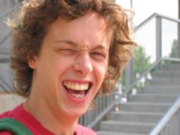
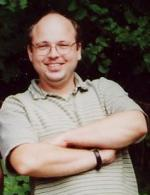

[% title = 'Wer ist wer' %]
Massiv veraltet!
Hier kann sich jedes Mitglied von Vienna.pm ein wenig vorstellen... (die
wenigsten haben es bisher getan, also schickt euer Infos!)
Gerfried Fuchs
Maximilian Attems

Theoretischer Physiker an der TU Wien, Debian Linux kernel Maintainer,
initramfs+klibc Entwickler, tanzt und springt gerne zu experimenteller
elektronischer Musik.
a.k.a.: maks
Email: maks at stro dot at
Website: maks blog
Richard Lippman
Verheiratet mit einer völlig analogen Frau, Vater von drei Kindern.
Sonst alles digital hier!
Systemadmin in einer kleinen Stadtverwaltung bei Nürnberg. Perl? Immer!
a.k.a.: Horshack
Email: horshack AT lisa.franken.de
Website: http://lena.franken.de
CPAN: HORSHACK
Thomas Klausner